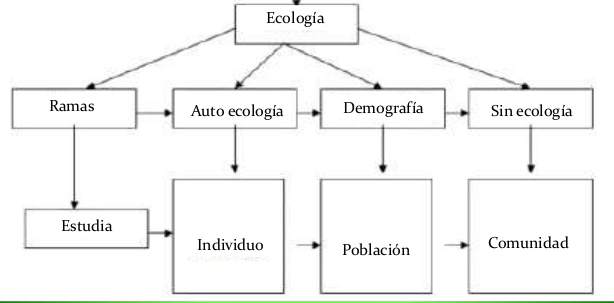
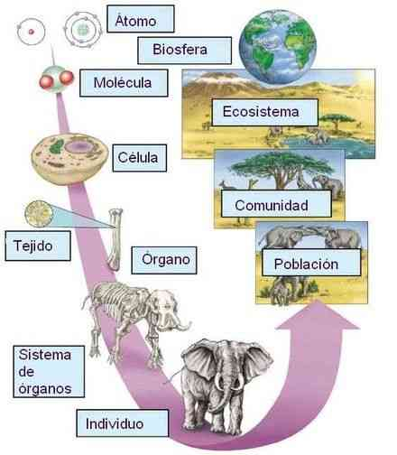

La ecología como ciencia integradora e interdisciplinaria.
Desde sus inicios la ecología ha cambiado mucho. Actualmente ya no se le considera como una rama de la biología, como se creía al principio; actualmente es vista como una ciencia integradora. Esto significa que en el estudio de los problemas ecológicos se requiere de la intervención de otras ciencias naturales, más como participantes activos que como simples ciencias auxiliares. Para cualquier estudio ecológico son necesarios conocimientos de diversas ciencias; sin embargo, la ecología debe saber integrar todas estas áreas en un sistema más complejo. En caso de un problema ecológico tratar de incluir cuando sea necesario al resto de las ciencias para su solución, identificando en cada situación la relación existente entre cada uno de sus componentes. La interdisciplinariedad se refiere a la asociación e integración de la información procurada por varias disciplinas que, al ser complementada, permite tener esquemas de explicación más amplios y certeros sobre cualquier fenómeno natural. Interrelación con otras ciencias. La ecología se ha estructurado con aportaciones de otras disciplinas, de ahí la importancia de su relación con otras ciencias.
El creciente interés de la opinión pública respecto a los problemas del medio ambiente ha convertido la palabra ecología en un término a menudo mal utilizado. Se confunde con los programas ambientales y el medio ambiente. Aunque se trata de una disciplina científica diferente, la Ecología contribuye al estudio y la comprensión de los problemas del medio ambiente.
Definición de Ecología: la ecología es una rama de la Biología que estudia las interacciones que determinan la distribución, abundancia, número y organización de los organismos en los ecosistemas. En otras palabras, la ecología es el estudio de la relación entre las plantas y los animales con su ambiente físico y biológico.
Medio ambiente: Conjunto de elementos físicos, químicos, biológicos y de factores sociales capaces de causar efectos directos e indirectos a corto o largo plazo sobre los seres vivos y las actividades humanas.
Para facilitar el estudio de los fenómenos ecológicos y desarrollar una metodología adecuada para la comprensión del objeto de conocimiento de la Ecología, se le ha dividido en ramas y son las siguientes: Educación ambiental. Campo emergente y complementario a la ecología, orientado a la formación de habilidades y actitudes para comprender las relaciones del ser humano con el medio ambiente. Y es aquí, donde actualmente existen personas, instituciones educativas y gubernamentales que se dedican a realizar investigaciones en el tema del cuidado de nuestro planeta, y generar mediante la divulgación de las mismas, aportaciones relevantes en esa temática. Es de suma importancia tener en cuenta esta información en estos días ya que nuestro planeta está sufriendo un maltrato prolongado, constante y progresivo. La problemática ambiental es compleja, tiene que ver con las formas en que la sociedad se ha relacionado con el medio ambiente; implica cuestiones de orden histórico, social, de carácter ético, económico y político. En estos momentos, es fundamental la generación de una educación ambiental donde se genere un análisis crítico de la realidad en esta materia y no sólo eso, sino que se identifiquen y promuevan las soluciones a los problemas ambientales.

Para entender a la Ecología es importante conocer como está organizada la materia viva que estudia, misma que se encuentra en diversos niveles de complejidad que van desde las partículas subatómicas hasta el universo. Debido a esto, la ecología subdivide su campo de estudio para atender mejor los diversos niveles de organización y de integración de la materia, considerando como su objeto de estudio a los siguientes niveles: individuo, población, comunidad, ecosistema y biósfera.
Individuo: es un ser independiente, de cualquier especie, un organismo completo capaz de efectuar las funciones que caracterizan a los seres vivos.
Población: es un conjunto de organismos de la misma especie que habita en una zona determinada. Una especie es un conjunto de organismos con características similares y capacidad para reproducirse, que puede incluir a una o más poblaciones. Por ejemplo la familia de lobos de la figura.
Comunidad: es el conjunto de poblaciones diferentes que comparten el área donde viven, interactuando entre sí. Los lobos, árboles, conejos, etc.
Ecosistema: es un espacio definido donde tienen lugar las interacciones entre una comunidad y su entorno. Es importante señalar que el ambiente representa un papel determinante en los tipos de organismos que pueden vivir en él, pero también reconocer la función de los seres vivos en el establecimiento de las características de su propio ambiente.
Biósfera: corresponde al mayor sistema ecológico, con el más alto nivel de organización biológica, conformado por todas las áreas de vida del mundo y sus interacciones. Es decir, considerando todos los ecosistemas que existen en la Tierra y los lugares del planeta donde se desarrolla la vida.
